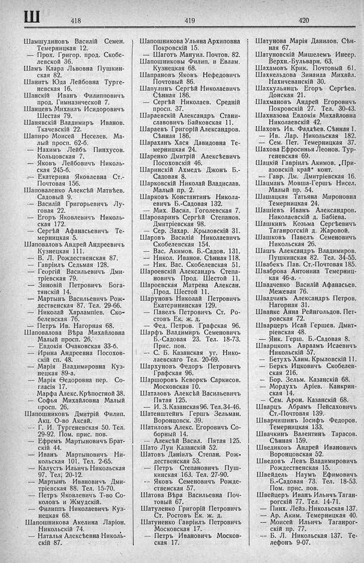

Лист источника 490
Скан

Распознанный текст
Ш
418
Шамшудиновъ Василій Семен.
Темерницкая 12.
— Прох. Григор. прод. Скобе-
левской 36.
Шамъ Клара Львовна Пушкин-
ская 82.
Шанитъ Юда Лейбовна Турге-
невская 16.
Шанскій Иванъ Филипповичъ
прод. Гимназической 7.
Шанцевъ Михаилъ Исидоровичъ
Шестая 79.
Шанявскій Владимиръ Иванов.
Ткачевскій 22.
Шапиро Моисей Неселев. Ма-
лый просп. 62-б.
— Нахимъ Лейбъ Пинхусов.
Кольцовская 7.
— Яковъ Лейбовичъ Николь-
ская 245-б.
— Екатерина Яковлевна Ст.-
Почтовая 156.
Шаповаленко Алексѣй Матвѣев.
Садовый 9.
— Василій Григорьевичъ Лу-
говая 22.
— Егоръ Яковлевичъ Николь-
ская 172.
— Сергѣй Афанасьевичъ Те-
мерницкая 5.
Шаповаловъ Андрей Андреевичъ
Кузнецкая 111.
— В. Л. Рождественская 87.
— Гавріилъ Седьмая 128.
— Георгій Васильевичъ Дми-
тріевская 79.
— Зиновій Петровичъ Бога-
тянскій 14.
— Мартынъ Васильевичъ Рож-
дественская 87. Тел. 29-66.
— Николай Харлампіев. Ско-
белевская 76.
— Петръ Ив. Нагорная 68.
Шаповалова Вѣра Михайловна
Малый просп. 26.
— Евдокія Очаковская 33-б.
— Ирина Андреевна Посохов-
скій сп. 48.
— Марія Владимировна Куз-
нецкая 89-а.
— Марія Ѳедоровна пер. Со-
гласія 17.
— Марфа Алекс. Крѣпостной 38.
— Софья Михайловна Малый
просп. 26.
Шапошниковъ Дмитрій Филип.
Акц. О-во Аксай.
— Г. И. Тургеневская 50. Тел.
29-92. Пом. прис. пов.
— Ефремъ Мартыновичъ Брат-
скій 44.
— Иванъ Мартыновичъ Ни-
кольская 101. Тел. 2-65.
— Калустъ Ильичъ Никольская
97. Тел. 20-12.
— Мартынъ Ивановичъ Дми-
тріевская 88. Тел. 15-70.
— Петръ Яковлевичъ Т-во Со-
коловъ и Жмудскій.
— Филиппъ Николаевичъ Куз-
нецкая 68.
Шапошникова Акелина Ларіон.
Никольскій 74.
— Наталья Алексѣевна Николь-
скій 87.
419
Шапошникова Ульяна Архиповна
Покровскій 15.
— Шаготъ Мануил. Почтов. 82.
Шапошниковы Филип. и Евлам.
Кузнецкая 68.
Шапрановъ Яковъ Нефедовичъ
Почтовый 86.
Шапулинъ Сергѣй Николаевичъ
Сѣнная 186.
— Сергѣй Николаев. Средній
просп. 37.
Шараевскій Александръ Стани-
славовичъ Байковская 11.
Шараевъ Григорій Александров.
Сѣнная 186.
Шараханъ Хася Давидовна Те-
мерницкая 24.
Шаренко Дмитрій Алексѣевичъ
Посоховскій 46.
Шаринскій Ахмедъ Джонъ Б.-
Садовая 8.
Шарковскій Николай Владислав.
Малый пр. 2.
Шарковъ Константинъ Никола-
евичъ Б.-Садовая 132.
— Мих. Васил. Гоголевская 7.
Шароваринъ Сергѣй Степанов.
Дмитріевская 98.
— Сер. Захар. Крыловскій 31.
Шаровъ Василій Николаевичъ
Скобелевская 154.
— Вас. Акимов. Б.-Садов. 131.
—— Никол. Иванов. Сѣнная 118.
— Ник. Вас. Скобелевская 51.
Шароевскій Александръ Степа-
новичъ Прод. Шестой 11.
Шароевская Матрена Алексан.
Прод. Шестой 11.
Шаруновъ Николай Петровичъ
Екатерининская 129.
— Павелъ Петровичъ Ст. Ро-
стовъ Ек. ж. д.
— Фед. Петров. Графская 96.
Шарфъ Владимиръ Семеновичъ
Б.-Садовая 23. Тел. 18-73.
Прис. пов.
—— С. Б. Казанская уг. Нико-
лаевскаго Тел. 20-69.
Шархуновъ Федоръ Петровичъ
Графская 96.
Шаршоровъ Кеворкъ Саркисов.
Московская 10.
Шаталовъ Алексѣй Васильевичъ
Пятая 125.
— И. З. Казанская 96. Тел. 34-46.
Шатенштейнъ Гершъ Зельман.
Воронцовск. 39.
Шатиловъ Алекс. Егоровичъ Со-
борный 14.
—— Алексѣй Васил. Пятая 125.
Шато Луи Казанскій 52.
Шатовъ Даніилъ Степан. Рож-
дественская 53.
— Петръ Степановичъ Пуш-
кинская 163. Тел. 27-90.
—— Яковъ Семеновичъ Рожде-
ственская 57.
Шатова Вѣра Васильевна Поч-
товый 67.
Шатуленко Григорій Петровичъ
Ст. Ростовъ Ек. ж. д.
Шатуненко Гавріилъ Петровичъ
Московская 17.
— Петръ Ивановичъ Москов-
ская 17.
420
Шатунова Марія Данилов. Сѣн-
ная 67.
Шатуновскій Мишелемъ Инеер.
Верхн.-Бульварн. 63.
Шахамовъ Крик. Почтовый 61.
Шахкельдова Зинаида Михайл.
Нахичеванскій 30.
Шахкульянцъ Егоръ Сергѣев.
Донская 21.
Шахмановъ Андрей Егоровичъ
Покровскій 27. Тел. 30-43.
Шахназова Евдокія Михайловна
Николаевскій 42.
Шаховъ Ив. Фаддѣев. Сѣнная 1.
— Ив. Лар. Никольская 182.
— Сем. Пет. Темерницкая 37.
Шахова Ефросинья Леонов. Тур-
геневская 69.
Шацкій Гавріилъ Акимов. „При-
азовскій край“ конт.
— Гавр. Дм. Дмитріевская 16.
Шацманъ Мовша-Гершъ Нисел.
Малый пр. 54.
Шашацкая Татьяна Мироновна
Темерницкая 24.
Шашіевъ Иванъ Александров.
Николаевскій д. Бабіева.
Шашкинъ Козьма Сергѣевичъ
Таганрогскій д. Жаровой.
Шашковъ Павелъ Семеновичъ
Никольская 26.
Шашъ Александръ Владимиров.
Пушкинская 82. Тел. 34-55.
Швабекъ Пав. Ст.-Почтовая 185.
Шваброва Антонина Темерниц-
кая 46-а.
Швадченко Василій Афанасьев.
Межевая 76.
Швадчинъ Александръ Петров.
Нагорная 31.
Шванке Анна Рейнгольдов. Пет-
ровская 72.
Шварцеръ Исай Гершев. Дмит-
ріевская 48.
— Янк. Герш. Б.-Садовая 8.
Шварцкопъ Авраамъ Исаевичъ
Никольскій 57.
— Бетулъ Хаим. Крыловскій 11.
— Беркъ Ицковичъ Скобелев-
ская 216.
— Бор. Зельм. Казанскій 68.
— Мордухъ Аріев. Канкрин-
ская 14.
—— Сем. Арон. Казанскій 68.
Шварцъ Абрамъ Пейсаховичъ
Ст.-Почтовая 139.
Шварчишинъ Іосифъ Федоров.
Темерницкая 133.
Швачкинъ Валентинъ Тарасов.
Сѣнная 159.
Шведиковъ Андрей Ивановичъ
Воронцовская 52.
Шведовъ Левъ Владимировичъ
Рождественская 15.
Швейдель Наумъ Ефимовичъ
Б.-Садовая 73. Тел. 18-53.
Пом. прис. пов.
Швейцеръ Иванъ Ильичъ Таган-
рогскій 77. Тел. 14-71.
— Пинх. Лейз. Никольская 137.
— Ар. Аким. Темерницкая 40.
— Моисей Ильичъ Таганрог-
скій пр. 77.
—— Б. Л. Никольская 137. Те-
лефонъ 9-07.